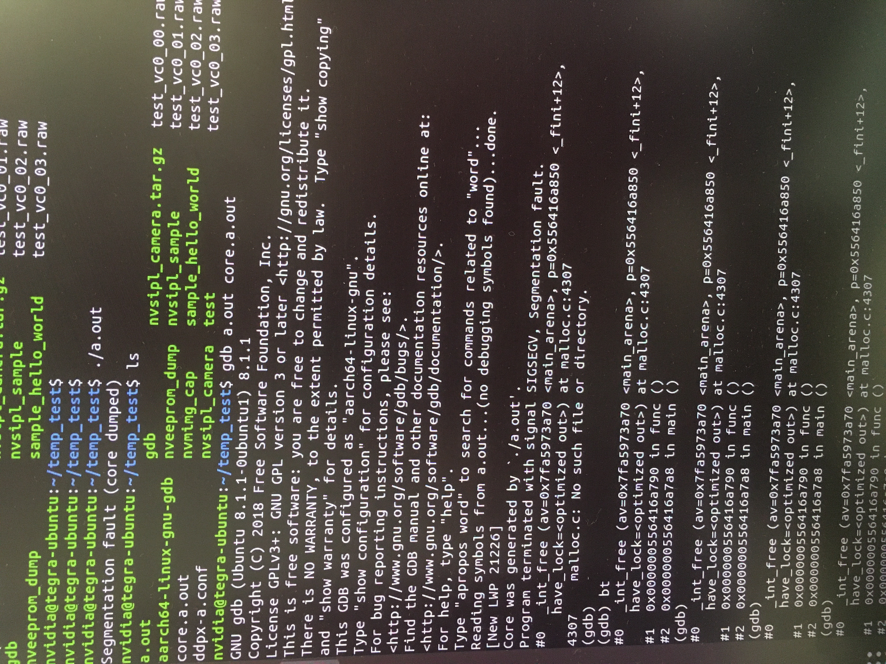

Tool chain-GDB
About
Definition
How to product dump.core
Example
1.about
Use GDB to perform Debug and Segmentation Fault positioning of NV platform Code
2.definition
GDB (GNU Debugger) is a powerful debugging tool under Unix and Unix-Like. You can debug ADA, C, C ++, ASM, Minimal, D, Fortran, Objective-C, GO, Java, Pascal and other languages.
In general, the following functions can be achieved with the help of the GDB debugger:
When the program starts, you can run the program according to our custom requirements, such as setting parameters and environment variables;
The debugging program can be paused at the specified code, and the running status of the current program (such as the value of the current variable, the execution result of the function, etc.), that is, support the breakpoint debugging;
During the program execution process, the value of a certain variable can be changed, and the execution order of the code can be changed to try to modify the logic errors in the program
For C programs, you need to add -g parameters during compilation to retain debugging information. Otherwise, you cannot use GDB for debugging. You can use it
$gdb helloword
Let's test whether the HelloOWORD file has debug information.
GDB debugging tools have been supported on the NV development board, and you can download it by yourself.The GDB process of normal Step by Step is no different from other platforms. This article mainly introduces how to use dump.core to debug when the common segmentation fault has errors appears in the NV platform.
3.How to product dump.core
3.1 Specify the location of the Core file
You can specify the position of the Core file generated by modifying the/proc/sys/kernel/core_pattern.
When I checked the core_pattern file, I found that it did specify a path, so I went to that path and found that it was a script program. Later, I checked the instruction file.
The generated Core file is transmitted to the scripts followed by it.Therefore, you need to change the specified position generated by dump.core.
Through command:
$sudo bash -c "echo /home/nvidia/temp_test/core.%e > /proc/sys/kernel/core_pattern "
Let's specify the production position of the dump.core file.
3.2 GDB file tool
When using GDB for a DUMP.CORE file debug, a GDB binary file tool is required, which can be provided by NV.When using it, you need to copy it to the executable file and the same directory of dump.core.
3.3 Set the size of the core
pass ulimit -a Check the size of the current system settings.use ulimit -c unlimited Let's cancel the restrictions on the size of the core.
3.4 Generate dump.core
When running executable files, when segmentation fault appears, the system will automatically generate dump.core files, such as core.a.out, and A.out is an executable file that currently occurs.
Use command:
$gdb a.out core.a.out。
Enter the depbug entrance to view the stack call information.
4.Example
Use A.out for testing, and the binary file is an error example of a stack.The fun () of the Main function call is as follows:
void func()
{
char *pstr="test_content";
free(pstr);
}
The compiler did not find logical errors, but Segmentation Fault errors occurred at runtime.As shown in the figure below, through the generated core, it can position the stack problem of the Func function in the main () function.
